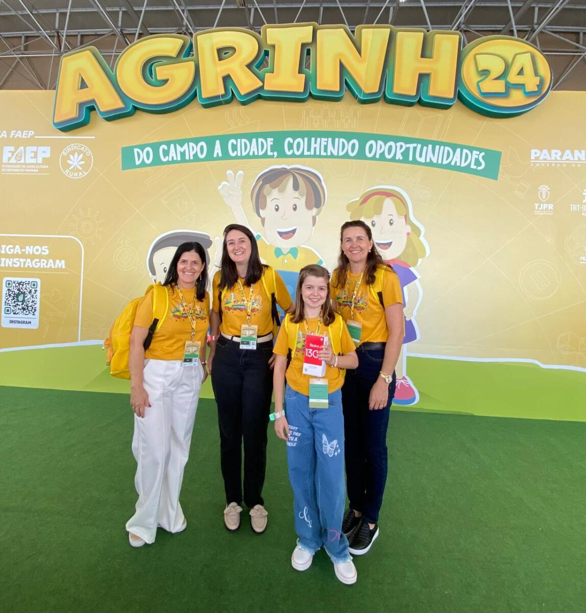
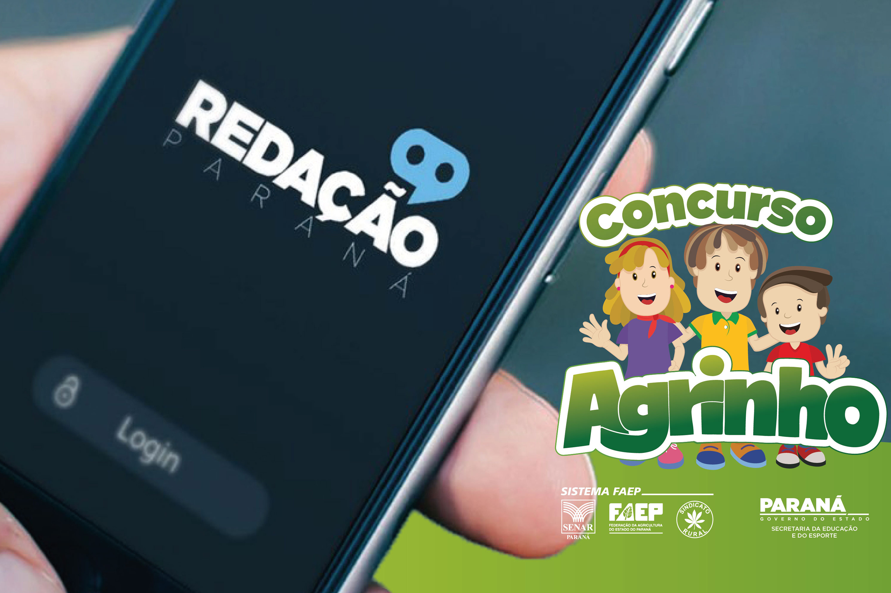
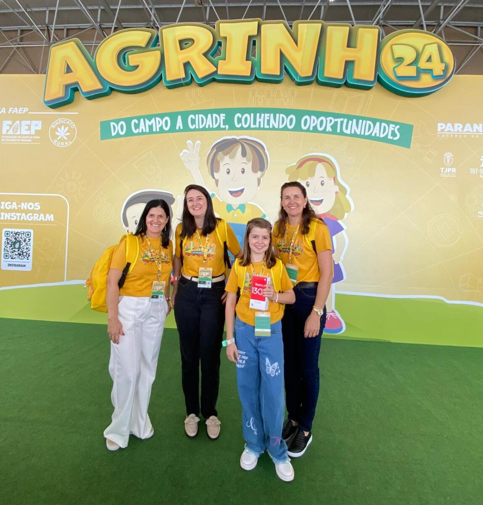
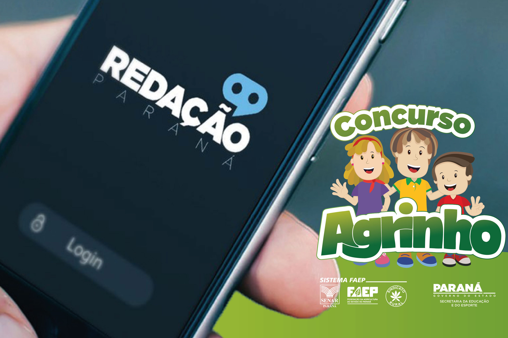

O que é o Agrinho?
O Agrinho é um projeto social e educativo da Secretaria de Agricultura e Abastecimento do Estado de São Paulo, que atua desde 1997. Seu foco é a educação do meio rural, promovendo valores como cidadania, sustentabilidade e cultura para crianças e jovens de escolas rurais. O projeto engloba atividades que estimulam o pensamento crítico e o respeito ao meio ambiente.
Por que o Agrinho é importante?
Através de concursos de redação, desenho e projetos, o Agrinho desperta o interesse dos jovens pelo campo e pela agricultura familiar, fortalecendo o vínculo com a terra e valorizando a cultura rural. Além disso, promove a consciência ambiental e a cidadania, ajudando na formação de futuros cidadãos responsáveis.
Galeria de Imagens
 



Como Participar?
Escolas rurais podem inscrever seus alunos no Agrinho, participando dos concursos e eventos oferecidos. Professores recebem material didático para trabalhar temas como cidadania, alimentação saudável e meio ambiente. Participar do Agrinho é uma forma de valorizar o conhecimento do campo e estimular a criatividade dos estudantes.